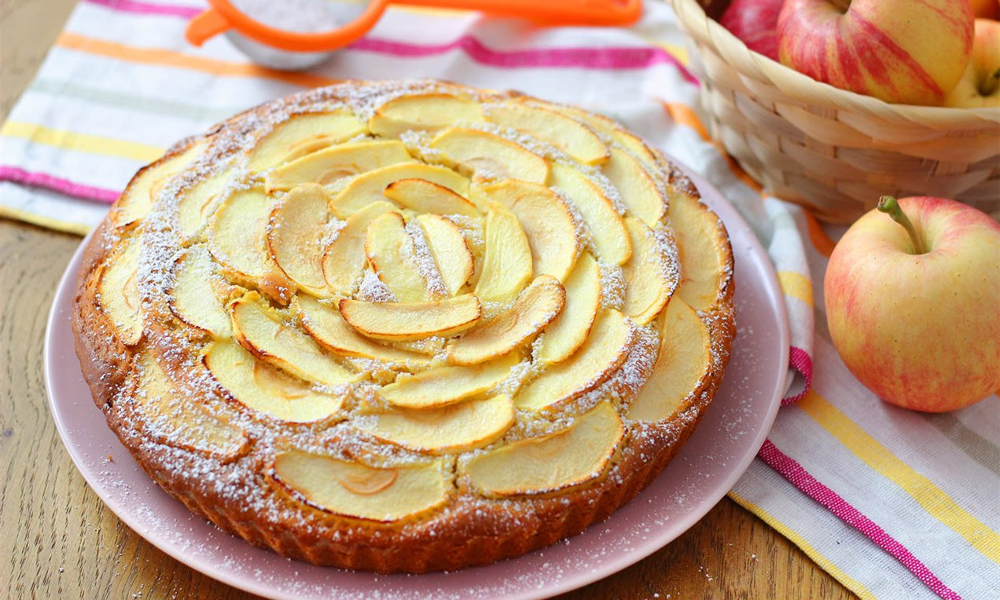

Torta di Mele della Nonna
Il dolce da credenza più classico, profumato e confortante. Un impasto soffice e burroso arricchito da tantissime fette di mela succose, cannella e una crosticina dorata in superficie.

Ingredienti
- 4 Mele medie (preferibilmente Renette o Golden Delicious)
- 250g di Farina 00
- 150g di Zucchero semolato
- 100g di Burro fuso (o 80ml di olio di semi)
- 3 Uova medie (a temperatura ambiente)
- 100ml di Latte intero
- 1 bustina (16g) di Lievito per dolci
- 1 cucchiaino di Cannella in polvere (opzionale)
- 1 Limone (scorza grattugiata e succo)
- 1 pizzico di Sale fino
- q.b. Zucchero a velo per decorare
Procedimento
- Preparazione delle mele: Sbuccia le mele, privale del torsolo e tagliane tre a cubetti e una a fettine sottili (che servirà per la decorazione). Mettile in una ciotola con il succo di limone per non farle annerire.
- Montatura delle uova: In una ciotola capiente lavora le uova con lo zucchero e il pizzico di sale con le fruste elettriche per circa 5 minuti, finché il composto non diventa chiaro e spumoso.
- Aggiunta dei liquidi e aromi: Versa a filo il burro fuso tiepido (o l'olio), il latte, la scorza di limone grattugiata e la cannella, continuando a mescolare a bassa velocità.
- Incorporazione delle polveri: Setaccia la farina ed il lievito ed uniscili gradualmente all'impasto, amalgamando con una spatola finché non ottieni una massa liscia e senza grumi.
- Unione delle mele: Scola i cubetti di mela dal succo di limone e incorporali delicatamente nell'impasto.
- Assemblaggio e Cottura: Versa l'impasto in uno stampo a cerniera da 24 cm precedentemente imburrato e infarinato. Decora la superficie disponendo a raggiera le fettine di mela tenute da parte. Cuoci in forno statico preriscaldato a 180°C per circa 40-45 minuti (fai la prova stecchino).
- Servizio: Sforma la torta una volta tiepida o fredda e spolverizza la superficie con zucchero a velo prima di servire.
💡 Note Finali e Consigli dell'Mastro Pasticcere
- Scelta delle Mele: Le mele Renette sono perfette per la cottura perché mantengono bene la struttura rilasciando un giusto equilibrio di dolcezza e acidità.
- Superficie Lucida: Per dare un tocco da pasticceria, spennella le mele in superficie con un velo di confettura di albicocche scaldata prima o subito dopo la cottura.
- Conservazione: La torta di mele si conserva morbida sotto una campana di vetro a temperatura ambiente per 3-4 giorni.